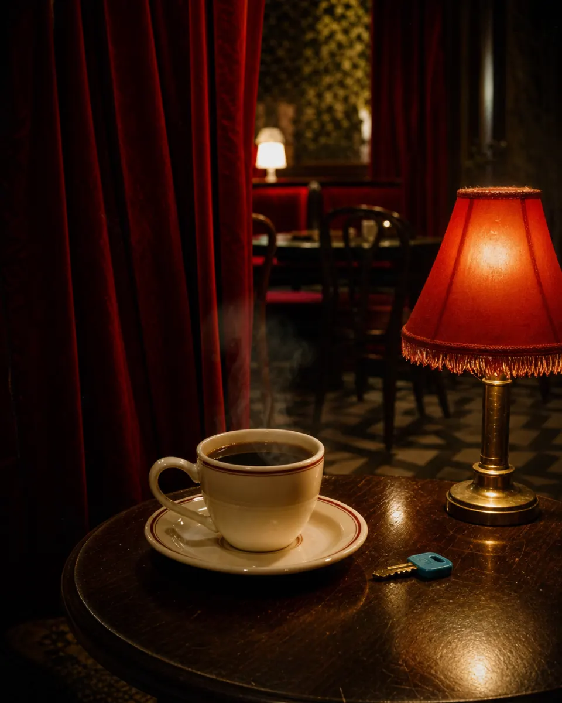

Чертовски хороший кофе
Сделай глоток. Он обжигает, но именно так на вкус ощущается пробуждение. Если на дне блеснет что-то синее, не зови официантку. Второй глоток будет холодным.
Кофемашина КК-312
Вода: не проверена Зерно: нет Давление: 0
Ты уже был здесь. Просто забыл.
Выход есть. И он прячется за тяжелой бархатной шторой.
Свободный столик
Заблудился по дороге домой? Или устал от бесконечных серых коридоров? Неважно. В нашем кафе всегда найдется свободный столик. Сядь. Выдохни. Послушай, как потрескивает старая пластинка. Время здесь застыло, так что можешь не смотреть на часы.
Говорят, из этого кафе невозможно найти выход. Но это лишь потому, что люди ищут привычные двери. Выход есть. И он прячется за тяжелой бархатной шторой.

Сделай глоток. Он обжигает, но именно так на вкус ощущается пробуждение. Если на дне блеснет что-то синее, не зови официантку. Второй глоток будет холодным.
Кофемашина КК-312
Вода: не проверена Зерно: нет Давление: 0
Официантка всегда знает, зачем ты пришел. Если ты ей понравишься, вместе со счетом она оставит маленький синий предмет. Спрячь его и не задавай вопросов.
Пластинка играет, пока зал помнит гостей. Не отводи взгляд от танцующих, пока музыка не остановится. После тишины проверь, где находится штора.
Не ищи привычные двери. Слушай пластинку. Смотри на штору только тогда, когда она сама посмотрит на тебя.
Гостевая оболочка не предназначена для просмотра отчета о сдерживании аномалии. Перейдите в служебный файл.
Открыть раздел «Персонал»